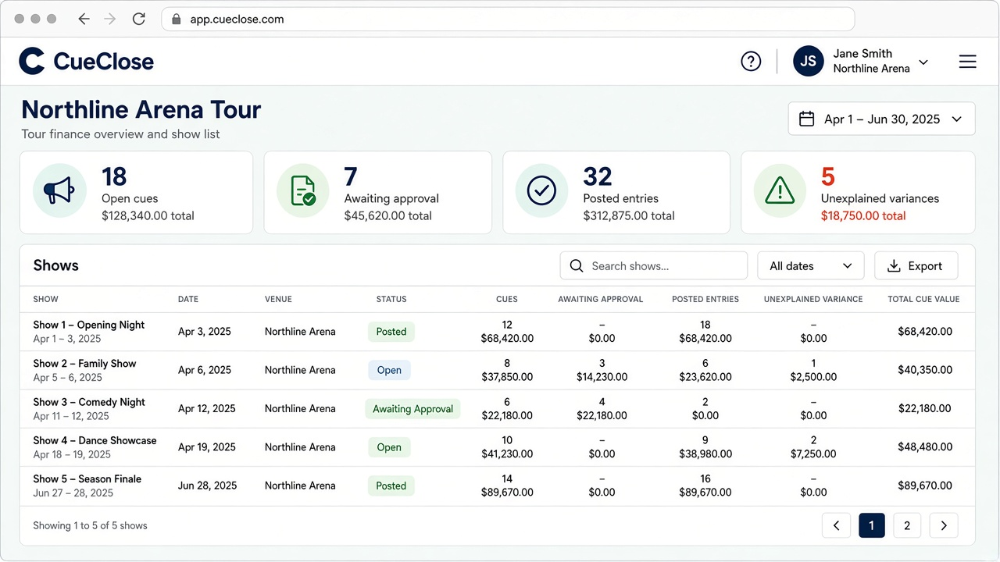
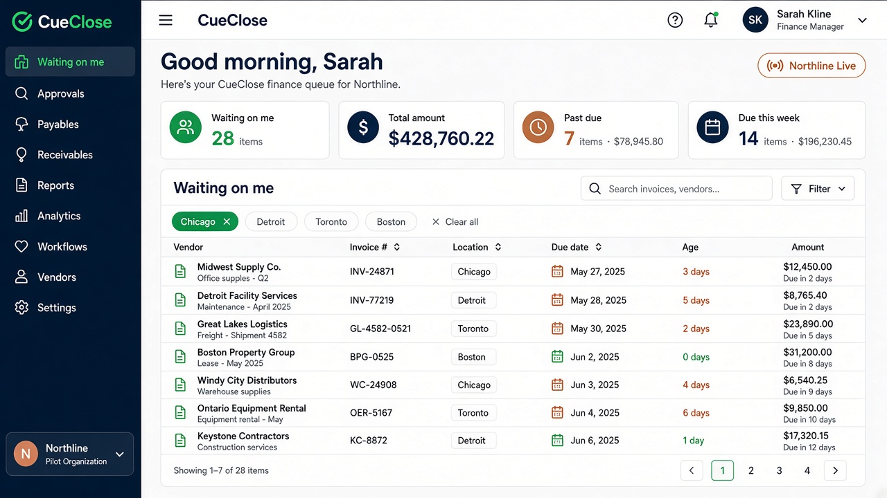
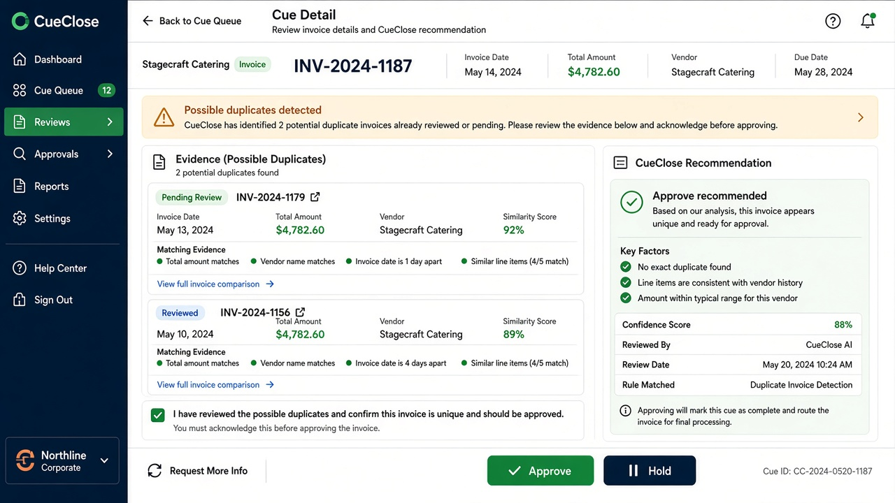

Prepared for Northline Live Entertainment
Architecture & design proposal · Nov 2026
Synthetic pilot · not production cutover
Architecture proposal
Exception-first tour finance for Northline’s arena close
This proposal responds to the Northline IPR discussion: keep NetSuite as system of record for now,
put CueClose beside it as an exception desk, meet people in the channels they already use, and earn
trust through explainable reconciliation before any cutover conversation.
CueClose green/navy stays the product system. Northline copper appears as a client accent on
pilot chrome and proposal materials so the room can tell “product” from “this engagement.”
Visual design
Before / after Command
Baseline Command is tour-aware but scavenger-hunt oriented. The pilot redesign makes “what needs
me” the first job of the screen, with show context one click away.

Before · Baseline — metrics and show slate, no personal queue.

After · Northline pilot — Waiting on me leads; copper client accent.
Why this is optimal: producers and managers do not need another dashboard habit.
They need a short list of decisions that are already theirs. Role-aware waiting-on-me reduces
cognitive load without weakening server-side authorization.
Duplicate acknowledge surface

Amber warning + forced acknowledge before Approve. Same approval API; stronger human checkpoint.
System context
Where CueClose sits during parallel run
CueClose does not replace NetSuite in phase one. It hydrates from operational inputs, runs the
exception workflow, posts only through authorized paths, and explains deltas against the legacy close.
Context map
Concern I would raise early: if ambient channels ship before server-owned
decision requests (expiry, one-time token, role check), we recreate Slack archaeology with prettier
buttons. Channels are doors. The ledger remains the authority.
Workflow
Golden path with Northline extensions
Cue lifecycle
Waiting-on-me resolution (shipped)
Computational view
Module boundaries (modular monolith)
One deployable web app for the demo. Clear ownership so ambient work cannot bypass ledger rules.
Module
Owns
Must not
Ingestion / cues
Source evidence, invoice identity, show suggestion
* Orchestration and registered asks reserved for the collaborative design session.
Duplicate gate sequence (shipped)
Delivery plan
What we show side-by-side, and why
The demo ships two editions in one binary. That mirrors a normal design session: keep the known
working spine visible while proving the delta that answers the client.
Edition
Includes
Interview purpose
Baseline
Cue inbox, evidence, role gates, post, recon, audit
“Here is the honest current product.”
Northline pilot
+ waiting-on-me, show filters, duplicate acknowledge, cue_006 seed
“Here is the reversible slice that meets two asks.”
Not built yet
Needs-info / ambient cards / cited asks
Design with the room; do not fake completeness.
How the client is satisfied: Priya gets city filters and duplicate protection now.
Dana gets a queue that starts with decisions, not scenery. Marcus keeps shadow defaults and
server authority. Chris and Elena’s harder ambient problems are framed honestly as the next
collaborative design slice, not a slideware promise.
Recommended next architecture moves
Introduce decision_request as a first-class entity (recipient, scope, expiry, token hash).
Message Preview adapters (Teams/Slack/email/SMS) call the same approvals API.
Registered query grammar for producer asks with mandatory citations.
Open to alternatives: If the room prefers a simpler path (filters only, no queue
policy), I would still keep duplicate acknowledgment server-side. UX can simplify; controls should not.